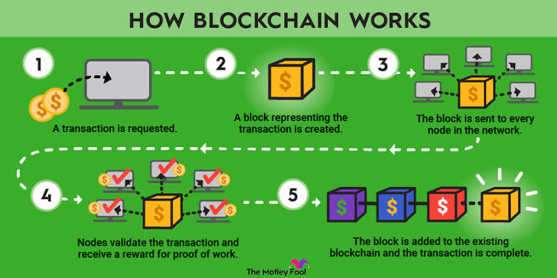
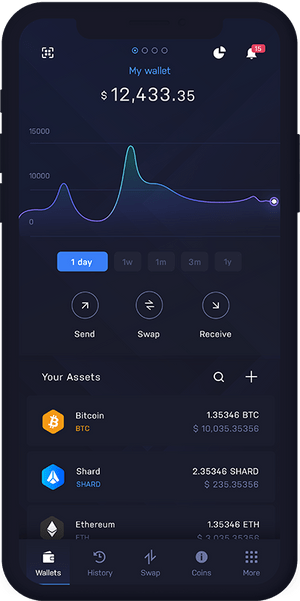
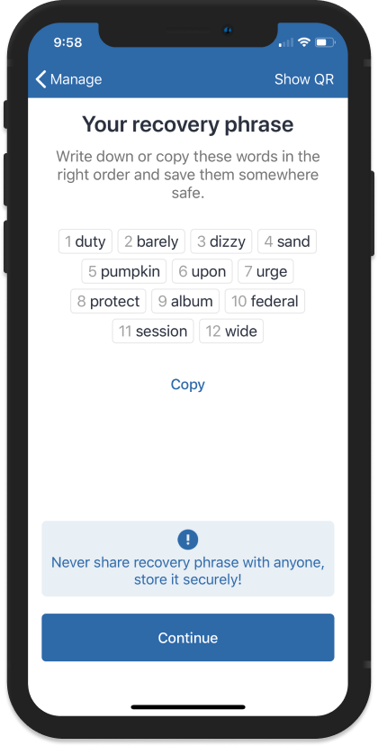
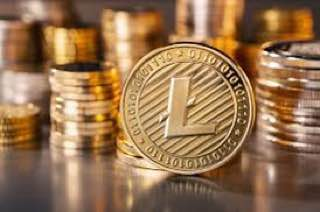

BEGINNING WITH CRYPTO
The first ever cryptocurrency was Bitcoin! You probably have heard of Bitcoin more than any other thing in the crypto industry. Bitcoin was the first product of the first blockchain developed by some anonymous entity who went by the name Satoshi Nakamoto. Satoshi released the idea of Bitcoin in 2008 and described it as a “purely peer-to-peer version” of electronic money.
Bitcoin was the first established cryptocurrency, but many attempts at creating digital currencies occurred years before Bitcoin was formally introduced.
Cryptocurrencies like Bitcoin are created through a process called mining. Very different than mining ore, mining cryptocurrencies involves powerful computers solving complicated problems. we would talk about mining in the Amateur of this website.
Bitcoin remained the only cryptocurrency until 2011. Then Bitcoin enthusiasts started noticing flaws in it, so they decided to create alternative coins, also known as altcoins, to improve Bitcoin’s design for things like speed, security, anonymity, and more. Among the first altcoins was Litecoin, which aimed to become the silver to Bitcoin’s gold. But at the time of this writing, over 5,000 cryptocurrencies are available, and the number is expected to increase in the future.
How did crypto start (history of crypto)
Bitcoin was the first cryptocurrency created and is now the most valuable and well known. It was first launched in January 2009 by a computer programmer or group of programmers under the pseudonym
Satoshi Nakamoto, whose actual identity has never been verified.
CRYPTO/CRYPTOCURRENCY is a digital currency designed to work as a medium of exchange through a computer network that is not reliant on any central authority, such as a government or bank to uphold and maintain it.
Note, not all countries legalises crytocurrency,example are Algeria, Bolivia, Egypt, Morocco, Nepal, Pakistan etc.
Keywords to know in crypto.
- Blockchain
- wallet address
- wallet
- Private key
- Seed phrase
Blockchain, can be said to be a system in which a record of transactions, especially those made with cryptocurrency, is maintained across computers
that are linked in a peer-to-peer network,also,blockchain can be said to be a technology that securely stores and shares information
across multiple computers" it is like a digital ledger that keeps records of transactions and can't be easily changed.
Now,let me bring it to your level as a beginner, for example, you have your mobile apps you use in doing financial transactions,
after every day or week as the case may be, you might decide to check your transactions history to check the amount of money you have spent,or the amount of money you sent to a particular account
maybe your friend or family member or a business partner, sometimes you check to see if it was the correct account detail you sent your money to, now this can help you anytime for reference purposes.
thats how the blockchain works, it keeps the transaction history of all cryptocurrency transactions safe for reference purposes.
Examples of blockchain
- Algorand
- Binance smart chain(bsc)
- solana
- Polygon
- Ethereum
- Tezos
- Terra
- Stacks

Wallets address,
is a unique identifier that represents a specific cryptocurrency wallet. It's like a digital destination where you can send or receive cryptocurrencies.
It's usually a long string of alphanumeric characters. it ls like the account number of your local bank where you can recieve money. Example of how wallet address looks like Bitcoin Address: 1BvBMSEYstWetqTFn5Au4m4GFg7xJaNVN2
Ethereum Address: 0x8d3e2bE8F6F5a5B6F5F2d5d6C3aB9f6bE1234567
A wallet is a digital tool or software that allows you to securely store, manage, and interact with your cryptocurrencies.
It's like a virtual wallet where you can keep track of your digital assets, make transactions, and view your crypto balance.
just like a physical wallet holds your cash and cards,or your bank wallet holds your money, a cryptocurrency wallet holds your digital currencies.
some example of popular wallets in crypto are Trust wallet, coinbase wallet, MetaMask, Exodus, Atomic wallet,Phantom, Ledger, Trezor, Blockchain wallet, Binance, Cool wallet,Zengo, kucoin wallet etc. Below is a photo of how a wallet looks

Types of Wallets
- HOT WALLET.
This is the one that is connected to the Internet and is considered the most vulnerable to hacking. Examples include mobile wallets and crypto exchanges.
Metamask is a popular browser-based crypto wallet.
- COLD WALLET.
On the other hand, is not connected to the Internet and is considered more secure. Examples include hardware wallets and paper wallets.
There are many free services for generating paper wallets e.g. Future Money Wallet.
- PAPER WALLET.
They are inconvenient to use but are the safest option. Consider using them if you have a large amount of crypto
to keep for a long period of time.
- HARDWARE WALLET.
are a little pricey and there’s always the risk of losing or breaking them. I am speaking from experience!
Software wallets are free and very easy to use. But if you accidentally delete them, your crypto is gone forever.
Again, I am speaking from experience! So remember to back up the seed phrase - a bunch of words
A Private Key
is a unique, secret code that is generated by your cryptocurrency wallet. It's like the password to access and control your digital assets. Think of it as the key that unlocks your wallet, It's important to keep your private key safe and secure because anyone who has access to it can control your cryptocurrencies.
So make sure to keep it secret, just like a hidden treasure!
A seed phrase, also known as a recovery phrase or mnemonic phrase,
is a series of words that serves as a backup for your cryptocurrency wallet. It's like a master
key that can restore your wallet and access your funds if you lose your device or forget your password. The seed phrase usually consists of 12, 24, or sometimes even more words in a specific order. It's crucial to keep your seed phrase secure and private, though some wallet wont allow you to screenshot so its advisable you write them down on a book and save them for reference purposes
as anyone who has it can potentially gain access to your wallet. So, keep it safe.

Types of cryptocurrencies
PAYMENT CURRENCY:
The first major cryptocurrency is payment cryptocurrency which is the Bitcoin, which is the most famous cryptocurrency,it was the first successful example of a digital payment cryptocurrency.
The main purpose of a payment cryptocurrency, is not only as a medium of exchange but also as a peer-to-peer electronic cash to facilitate transactions.
Broadly speaking, since this type of cryptocurrency is meant to be a general-purpose currency, it has a dedicated blockchain that only supports that purpose.
It means that smart contracts and decentralized applications (Dapps) cannot be run on these blockchains.
These payment cryptocurrencies also tend to have a limited number of digital coins that can ever be created, which makes them naturally deflationary.
With less of these digital coins can be mined, the value of the digital currency is expected to rise, when there is more demand and limited supply, then the price is expected to increase
Examples of payment cryptocurrencies include Bitcoin, Doge coin , litecoin monero and Bitcoin Cash.
UTILITY TOKENS:
These are any cryptographic asset that runs on top of another blockchain. Ethereum network was the first to incorporate the concept of allowing other crypto assets to piggyback on its blockchain.
As a matter of fact, Vitalik Buterin, the founder of Ethereum, envisioned his cryptocurrency as an open-sourced programmable money that could allow smart contracts and decentralized apps to disintermediate legacy financial and legal entities.
Another key difference between tokens and payment cryptocurrency is that tokens, like Ether on the Ethereum network, are not capped.
These cryptocurrencies are, therefore, inflationary – meaning that since more and more of these tokens are created, the value of this digital asset should be expected to fall, like a fiat currency in a country that is constantly running its cash printing press.
A Utility Token serves a specific purpose or function on the blockchain, called a use case.
Ether’s use case, as an example, is for paying transaction fees to write something
to the Ethereum blockchain or building and purchasing Dapps on the platform. In fact, the Ethereum network was
changed in 2021 to expend, or burn off, some of the Ether used in each transaction to align the use case. You will hear these sorts of tokens referred to as Infrastructure Tokens.
SERVICE TOKENS:
Some cryptocurrency projects issue Service Tokens that grant the holder access to or allow them to perform something on a network. One such type of this service token is Storj, an alternative to Google drive Dropbox, or Microsoft Onedrive.
The platform rents unused hard drive space to those looking to store data in the Cloud.
These users would pay for the service in Storj’s native utility token.
earn these tokens, those who are storing the data must pass random file verification cryptographically every hour to ensure that the data is still in their possession.
FINANCE TOKENS:
Another example of a token is Binance’s binance smart coin (bsc) which was created to give the holder discounted trading fees.
As this type of token grants access to a cryptocurrency exchange, you will sometimes hear it referred to as an Exchange Token.
Tokens are most commonly sold by Initial Coin Offerings (ICO), which connects early-stage cryptocurrency projects to investors.
ones that represent ownership or other rights to another security or asset are called Security Tokens, a type of fractional ownership. More broadly speaking, exchange and security tokens belong to a larger class of Financial Tokens related to financial transactions, such as borrowing, lending, trading, crowdfunding, and betting.
GOVERNANCE TOKENS:
Another interesting use of tokens is for governance purposes.
These tokens give its holders a right to vote on certain things within a cryptocurrency network. Generally, these tend to bigger and more significant changes or decisions and is necessary to maintain the decentralized nature of the network. This allows the community, through their votes, to decide on proposals, rather than focus the decision-making power in a small group.
An example would be a DAO (Decentralized Autonomous Organizations), which are a type of virtual cooperatives.
The most famous of these is the Genesis DAO. More currently, the MakerDAO has a separate governance token, called the MKR. Holders of MKR get to vote on decisions pertaining to MakerDAOs stablecoin, called Dai.
Media and Entertainment Tokens
Lastly, there are also Media and Entertainment Tokens, which are used for content, games, and online gambling. An example is Basic Attention Token (BAT), which awards tokens to users who opt-in to view advertisements, which then can be used to top content creators.
NON-FUNGIBLE TOKENS(Nfts):
You might wonder why another commonly heard token hasn’t been mentioned. Non-Fungible Tokens (NFTs) are certainly one of the hottest topics in the Decentralized Finance (DeFI) space.
However, NFTs are not a cryptocurrency as cryptocurrencies are fungible – meaning one unit of a particular cryptocurrency is identical to the next.
A holder of one BTC should be completely indifferent if another person offers them another unit of BTC.
Same for any cryptocurrency.
However, for NFTs, each one is unique and non-fungible, so we don’t include them as a cryptocurrency.
STABLE COINS:
Given the volatility experienced in many digital assets, stablecoins are designed to provide a store of value. They maintain their value because while they are built on a blockchain, this type of cryptocurrency can be exchanged for one or more fiat currencies. So stablecoins are actually pegged to a physical currency, most commonly the U.S. dollar or the Euro.
The company that manages the peg is expected to maintain reserves in order to guarantee the cryptocurrency’s value.
This stability, in turn, is attractive to investors who might use stablecoins as a savings vehicle or as a medium of exchange that allows for regular transfers of value free from price swings.
The highest profile stablecoin is Tether’s USDT, which is the third-largest cryptocurrency by market capitalization behind Bitcoin and Ether. The USDT is pegged to the US dollar, meaning its value is supposed to remain stable at 1 USD each. It achieves this by backing every USDT with one US dollar worth of reserve assets in cash or cash equivalents.
Holders can deposit their fiat currency for USDT or redeem their USDT directly with Tether limited at the redemption price of $1, less fees that Tether charges. Tether also lends out cash to companies to make money.
However, stablecoins aren’t subject to any government regulation or oversight.
In May 2022, another high-profile stablecoin, TerraUSD, and its sibling coin, Luna, collapsed. TerraUSD went from $1 to just 11 cents.
The problem with TerraUSD was that instead of investing reserves into cash or other safe assets, it was backed by its own currency, Luna. During its crash in May, Luna went from over $80 to a fraction of a cent. As holders of TerraUSD clamored to redeem their stablecoins, TerraUSD lost its peg to the dollar.
The lesson here again is to do your due diligence before even buying stablecoins by looking at the whitepaper and understanding how the stablecoin maintains its reserves.
CENTRAL BANK DIGITAL CURRENCIES(cbdc):
is a form of cryptocurrency issued by the central banks of various countries. CBDCs are issued by central banks in token form or with an electronic record associated with the currency and pegged to the domestic currency of the issuing country or region.
Since this digital currency is issued by central banks, the central banks maintain full authority and regulation over the CBDC.
The implementation of a CBDC into the financial system and monetary policy is still in the early stages for many countries; however, over time it may become more widely adopted.
Like cryptocurrencies, CBDCs are built upon blockchain technology that should increase payment efficiency and potentially lower transaction costs.
While the use of CBDCs is still in the early stages of development for many central banks across the world, several CBDCs are based upon the same principles and technology as cryptocurrencies, such as Bitcoin.
The characteristic of the currency being issued in token form or with electronic records to prove ownership makes it similar to other established cryptocurrencies. However, as CBDCs are effectively monitored and controlled by the issuing government, holders of this cryptocurrency give up the advantage of decentralization, pseudonymity, and lack of censorship.
CBDCs maintain a “paper trail” of transactions for the government, which can lead to taxation and other economic rents to be levied by governments.
On the plus side, in a stable political and inflationary environment, CBDCs can be reasonably expected to maintain their value over time or at least track the pegged physical currency.
In addition to having the full faith and credit of the issuing country, buyers of CDBCs would also not have to worry about fraud and abuse that has plagued many other cryptocurrencies.
ALGORITHM STABLECOINS.These are Cryptos whose price stability is maintained by an algorithm. They are different from fiat-pegged stablecoins whose stability is maintained by the fiat currency they are pegged to.
Example: Frax (FRAX).
GOVERNANCE TOKEN.Governance tokens give holders a vote in a project’s development. Example: Uniswap (UNI).
PUBLIC BLOCKCHAIN NATIVES.An asset-backed token or a Wrapped Asset is a blockchain token pegged to or collateralized by an asset such as art, gold, fiat currency, debt, equity shares, trade invoices, real estate, etc. It’s called a “wrapped” asset or token because the original asset is put in a “wrapper” or “digital vault” that enables the wrapped version to be traded on a blockchain.
Example: Coffee coin.
ASSET-BACKED TOKENS. Or a Wrapped Asset is a blockchain token pegged to or collateralized by an asset such as art, gold, fiat currency, debt, equity shares, trade invoices, real estate, etc. It’s called a “wrapped” asset or token because the original asset is put in a “wrapper” or “digital vault” that enables the wrapped version to be traded on a blockchain.
Example: Coffee coin.
LENDING/BORROWING CRYPTOS.
These tokens make it easy for investors to borrow and lend funds in a Decentralised Finance market.
Example: Aave (AAVE)
EXAMPLES OF SOME POPULAR CRYPTOCURRENCIES
Bitcoin
Founded in 2009, Bitcoin was the first cryptocurrency and is still the most commonly traded. The currency was developed by Satoshi Nakamoto
widely believed to be a pseudonym for an individual or group of people whose precise identity remains unknown.
Ethereum
Developed in 2015, Ethereum is a blockchain platform with its own cryptocurrency,
called Ether (ETH) or Ethereum. It is the most popular cryptocurrency after Bitcoin.
Litecoin
This currency is most similar to bitcoin but has moved more quickly to develop new innovations,
including faster payments and processes to allow more transactions.

Ripple
Ripple is a distributed ledger system that was founded in 2012. Ripple can be used to track different kinds of transactions, not just cryptocurrency.
The company behind it has worked with various banks and financial institutions.
HOW CRYPTOCURRENCY WORKS
Cryptocurrencies, and more specifically Bitcoin, have been one of the first use cases for blockchain technology, That’s why most people may have heard about Bitcoin more than they have about the underlying blockchain technology.
This chapter gets into more detail about how cryptocurrencies use blockchain technology, how they operate,
and how they’re generated
Explanation of cryto process
Cryptocurrencies, and more specifically Bitcoin, have been one of the first use cases for blockchain technology, That’s why most people may have heard about Bitcoin more than they have about the underlying blockchain technology.
This chapter gets into more detail about how cryptocurrencies use blockchain technology, how they operate, and how they’re generated
Cryptocurrencies are also known as digital coins, but they’re quite different from the coins in your piggy bank. For one thing, they aren’t attached to a central bank, a country, or a regulatory body.
Here’s an example. Say you want to buy a crypto book from your local bookstore. Using your normal debit card, this is how it goes
- you give your card to the cashier
- then he or she runs your card through,asking your bank if you have enouch money in your bank account to purchase the book
- then the bank checks your record to confirm if you have up to that amount
- if yes, then they give an approval to the store cashier unit
- the bank now updates its record showing the movement of your money from your account to the stores account
- then the bank gets a charge for being the middle man
Now if you wanted to remove the bank from this entire process, who else would you trust to keep all these records without altering them or cheating in any way? Your mom? Your dad? In fact, you may not trust any single person. But how about trusting everyone in the network?
Blockchain technology works to remove the middleman. When applied to cryptocurrencies,
blockchain eliminates a central record of transactions. Instead, you distribute many copies of your transaction ledger around the world. Each owner of each copy records your transaction of buying the book.
Here’s what happens if you want to buy this book using a cryptocurrency:
- you collects the shop wallet address
- paste it on your wallet
- make the transaction of the particular amount of the book to the cashiers address
- offcourse you will pay a very little amount of as gas fee to the nodes for the transaction
- then wait a little while for the cashier to approve your payment,
- you are good to go
That means no organization is keeping track of where your coins are or investi- gating fraud. In fact,
cryptocurrencies such as Bitcoin wouldn’t exist without a whole network of bookkeepers (nodes) and a little thing known as cryptography.
Benefits of crytocurrency
Are you still doubting the power or importance of cryptocurrency over your local bank?
now lets look into this:
excess money printingby thr government
Governments have central banks, and central banks have the ability to simply print money when they’re faced with a
serious economic problem. This process is also called quantitative easing. By printing more money, a government may be able to bail out debt or devalue its currency. However, this approach is like putting a bandage on a broken leg. Not only does it rarely solve the problem, but the negative side effects can also sometimes surpass the original issue.
For example, when a country like Iran or Venezuela prints too much money, the value of its currency drops so much that inflation skyrockets and people can’t even afford to buy everyday goods and services. Their cash becomes barely as valuable as rolls of toilet paper. Most cryptocurrencies have a limited, set amount of coins available. When all those coins are in circulation,
a central entity or the company behind the blockchain has no easy way to simply create more coins or add on to its supply.
Giving people the power over thier money
With traditional cash, you’re basically giving away all your control to central banks and the government. If you trust your government, that’s great, but keep in mind that at any point, your government is able to simply freeze your bank account and deny you access to your funds. For example, in the United States, if you don’t have a legal will and own a business, the government has the right to all your assets if you pass away. Some governments can even simply abolish bank notes the way India did in 2016.
With cryptocurrencies, you and only you can access your funds. Unless someone steals them from you.
Reducing curruption
With great power comes great responsibility. But when you give a ton of power to only one person or entity, the chances of their abusing that power increase. The 19th-century British politician Lord Acton said it best: “Power tends to corrupt, and absolute power corrupts absolutely.” Cryptocurrencies aim to resolve the issue of absolute power by distributing power among many people or, better yet, among all the members of the network.
That’s the key idea behind blockchain technology.
Cutting out the middle man
With traditional money, every time you make a transfer, a middleman like your bank or a digital payment service takes a cut. With cryptocurrencies, all the network members in the blockchain are that middleman;
their compensation is formulated differently from that of fiat money middlemen and therefore is minimal in comparison.
Serving the unbanked
A vast portion of the world’s citizens has no access or limited access to payment systems like banks. Cryptocurrencies aim to resolve this issue by spreading digital commerce around the globe so that anyone with a mobile phone can start making payments. And yes, more people have access to mobile phones than to banks. In fact, more people have mobile phones than have toilets,
but at this point the blockchain technology may not be able to resolve the latter issue.
Misconceptions about cryptocurrency
During the 2017 Bitcoin hype, a lot of misconceptions about the whole industry started to circulate. These myths may have played a role in the cryptocurrency crash that followed the surge. The important thing to remember is that both the blockchain technology and its byproduct, the cryptocurrency market, are still in their infancy,
and things are rapidly changing. So let’s get some of the most com- mon misunderstandings out of the way:
You can make anonymous transactions using all cryptocurrencies
For some reason, many people equate Bitcoin with anonymity. But Bitcoin, along with many other cryptocurrencies, doesn’t incorporate anonymity at all. All transactions made using such cryptocurrencies are made on public blockchain. Some cryptocurrencies, such as Monero, do prioritize privacy, meaning no outsider can find the source,
amount, or destination of transactions. However, most other cryptocurrencies, including Bitcoin, don’t operate that way.
Cryptocurrencies are good only for criminals.
Some cryptocurrencies boast anonymity as one of their key features. That means your identity isn’t revealed when you’re making transactions. Other cryptocurrencies are based on a decentralized blockchain, meaning a central government isn’t the sole power behind them. These features do make such cryptocurrencies attractive for criminals; however, law-abiding citizens in corrupt countries can also benefit from them. For example, if you don’t trust your local bank or country because of corruption and political instability,
the best way to store your money may be through blockchain and cryptocurrency assets.
The only application of blockchain is Bitcoin.
This idea couldn’t be further from the truth. Bitcoin and other cryptocurrencies are a tiny byproduct of the blockchain revolution. Many believe Satoshi created Bitcoin simply to provide an example of how the blockchain technology can work.
Almost every industry and business in the world can use the blockchain technology in its specific field.
All blockchain activity is private.
Many people falsely believe that the blockchain technology isn’t open to the public and is accessible only to its network of common users. Although some companies create their own private blockchains to be used only among employees and business partners, the majority of the blockchains behind famous cryptocurrencies such as Bitcoin are accessible by the public. Literally anyone with a computer can access the transactions in real time. For example, you can view the real-time Bitcoin transactions at
www.blockchain.com.
Risks in cryptocurrencies
Just like anything else in life, cryptocurrencies come with their own risks. Whether you trade cryptos, invest in them, or simply hold on to them for the future, you must assess and understand the risks beforehand. Some of the most talked-about cryptocurrency risks include their volatility and lack of regulation. Volatility got especially out of hand in 2017,
when the price of most major cryptocurrencies, including Bitcoin, skyrocketed above 1,000 percent and then came crashing down.
Cryptocurrency payments do not come with legal protections.
Credit cards and debit cards have legal protections if something goes wrong. For example, if you need to dispute a purchase, your credit
card company has a process to help you get your money back. Cryptocurrencies typically do not come with any such protections.
Some information about your transactions will likely be public.
People talk about cryptocurrency transactions as anonymous. But the truth is not that simple. Cryptocurrency transactions will typically be recorded on a public ledger, called a “blockchain.” That’s a public list of every cryptocurrency transaction — both on the payment and receipt sides. Depending on the blockchain, the information added to the blockchain can include details like the transaction amount, as well as the sender’s and recipient’s wallet addresses. It’s sometimes possible to use transaction and wallet information to identify the people involved in a specific transaction. And when you buy something from a seller who collects other
information about you, like a shipping address, that information can also be used to identify you later on.
Some information about your transactions will likely be public.
People talk about cryptocurrency transactions as anonymous. But the truth is not that simple. Cryptocurrency transactions will typically be recorded on a public ledger, called a “blockchain.” That’s a public list of every cryptocurrency transaction — both on the payment and receipt sides. Depending on the blockchain, the information added to the blockchain can include details like the transaction amount, as well as the sender’s and recipient’s wallet addresses. It’s sometimes possible to use transaction and wallet information to identify the people involved in a specific transaction. And when you buy something from a seller who collects other
information about you, like a shipping address, that information can also be used to identify you later on.
Facts about investing in cryptocurrencies
- If you store your cryptocurrency online, you don’t have the same protections as a bank account.
Holdings in online “wallets” are not insured by the government like U.S. bank deposits are.
- No one can guarantee you’ll make money off your investment. Anyone who promises you a guaranteed return or profit is likely scamming you.
Just because the cryptocurrency is well-known or has celebrities endorsing it doesn’t mean it’s a good investment.
- Not all cryptocurrencies or the companies behind them are the same. Before you decide to invest in a cryptocurrency, look into the claims the company is making. Do an internet search with the name of the company
and the cryptocurrency with words like review, scam, or complaint. Look through several pages of search results.
-
Cryptocurrencies aren’t backed by a government or central bank. Unlike most traditional currencies,
such as the U.S. dollar, the value of a cryptocurrency is not tied to promises by a government or a central bank.
- A cryptocurrency’s value can change constantly and dramatically. An investment that may be worth thousands of dollars today
could be worth only hundreds tomorrow. If the value goes down, there’s no guarantee that it will rise again.
- Nothing about cryptocurrencies makes them a foolproof investment. Just like with any investment opportunity, there are no guarantees.
COMMON CRYPTO SCAMS.
Crypto scam can be said to be an initiative Scammers uses to obtain access to a targets digital wallet or authentication credentials

Here are some common crypto scams.
BlackmailVictims receive an email claiming that their computer has been ‘hacked’ and the hacker has hijacked their web camera and recorded ‘intimate’ moments.
The scammers then threaten to release the video online unless some Bitcoin is paid to them.
Fake Exchange
Scammers offer free cryptos in exchange for a small ‘registration fee’. Once you pay the fees, they vanish!g
Free GiveawaysScammers offer free cryptos in exchange for a small ‘registration fee’. Once you pay the fees, they vanish!
ImpersonifationScammers create fake social media accounts that impersonate famous people. These accounts are used to carry out a variety of frauds.
MalwareMany victims end up downloading malicious software and apps. These apps can change crypto addresses when they’re copy-pasted from the victim’s clipboard. The result - you end up sending crypto to the scammer’s address instead of the actual person you want to pay.
Meet-in-person attacksNever meet anyone in person to buy crypto. You could get robbed and even murdered! Scammers may also pay you in counterfeit currency in exchange for your crypto.
Phishing emailsNever engage with emails that ask for your seed phrase, private keys, or passwords. These emails may look authentic but remember that there is no legitimate reason for anyone to ask for your seed phrase, private keys, or passwords.
Ponzi SchemesPeople land up on phishing websites by clicking on links in fake
emails and sometimes even through search engine results. These websites can steal your passwords and even fool you
into installing malware.
Pyramid schemesBeware of ‘pyramid schemes’ which promise you high returns based on the number of people you invite into the crypto network.
Punp-and-dumpIn a pump-and-dump scheme, scammers artificially ‘pump’ up the price of a crypto and sell it to unsuspecting victims. Once enough people have bought the crypto, the scammers disappear and the value of the crypto crashes to near-zero.
Scam coins and rug poolWhile there are many great cryptos, there are also many scam coins. Be careful while investing in new cryptos. Check out the team, whitepaper, website, and other available information carefully before investing.
conclusion to this section
Hey buddy we have come to the conclusion to this section, hope you enjoyed it?
maybe you still have doubts or confusion about cryptocurrencies, i will help you out in the next section.
now meet me in the
AMATEUR SECTION.